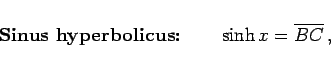

Inhalt Index DeskTop Bronstein

 Geometrie Planimetrie Geometrische Definition der Kreis- und Hyperbel-Funktionen
Geometrie Planimetrie Geometrische Definition der Kreis- und Hyperbel-Funktionen


In Analogie zur Definition der trigonometrischen Funktionen mit Hilfe der Kreissektorfläche (s. (3.3), (3.4), (3.5)) wird anstelle der Sektorfläche des Kreises mit der Gleichung x2+y2=1 die entsprechende Sektorfläche der Hyperbel mit der Gleichung x2-y2=1 (rechte Abbildung) betrachtet.
Mit der Bezeichnung x für diese Fläche COK (schattiert gezeichnet), lauten die Definitionsgleichungen der Hyperbelfunktionen:
|  | (3.9) |
| (3.10) |
| (3.11) |
Berechnung der Fläche x durch Integration und Ausdrücken des Ergebnisses mit und  liefert
liefert
| (3.12) |
so daß die Hyperbelfunktionen nunmehr mit Hilfe von Exponentialfunktionen darstellbar sind:
| (3.13) |
| (3.14) |
| (3.15) |
Das sind die Definitionsgleichungen der Hyperbelfunktionen. Die Bezeichnung Hyperbelfunktionen ist offenkundig.